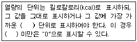

한식조리기능사 (2012-07-22 기출문제)
1과목: 식품위생 및 법규
1. 과일통조림으로부터 용출되어 다량 섭취 시 구토, 설사, 복통 등을 일으킬 가능성이 있는 물질은?
- 아연(Zn)
- 납(Pb)
- 구리(Cu)
- 주석(Sn)·
(정답률: 85%)

2. 증식에 필요한 최저 수분활성도(Aw)가 높은 미생물부터 바르게 나열된 것은?
- 세균-효모-곰팡이
- 곰팡이-효모-세균
- 효모-곰팡이-세균
- 세균-곰팡이-효모
(정답률: 76%)
3. 곰팡이 독으로서 간장에 장해를 일으키는 것은?
- 시트리닌(citrinin)
- 파툴린(patulin)
- 아플라톡신(aflatoxin)
- 솔라렌(psoralene)
(정답률: 87%)
4. 어육의 초기 부패 시에 나타나는 휘발성 염기질소의 양은?
- 5~10㎎%
- 15~25㎎%
- 30~40㎎%
- 50㎎% 이상
(정답률: 50%)
5. 맥각중독을 일으키는 원인물질은?
- 루브라톡신(rubratoxin)
- 오크라톡신(ochratoxin)
- 에르고톡신(ergotoxin)
- 파툴린(patulin)
(정답률: 76%)
6. 산업장, 소각장 등에서 발생하는 발암성 환경오염 물질은?
- 안티몬(antimon)
- 벤조피렌(benzopyrene)
- PBB(polybrominated bipheny1)
- 다이옥신(dioxin)
(정답률: 82%)
7. 혐기성균으로 열과 소독약에 저항성이 강한 아포를 생산하는 독소형 식중독은?
- 장염 비브리오균
- 클로스트리디움 보툴리늄
- 살모넬라균
- 포도상구균
(정답률: 72%)
8. 유해감미료에 속하는 것은?
- 둘신
- D-소르비톨
- 자일리톨
- 아스파탐
(정답률: 70%)
9. 유지나 지질을 많이 함유한 식품이 빛, 열, 산소등과 접촉하여 산패를 일으키는 것을 막기 위하여 사용하는 첨가물은?
- 피막제
- 착색제
- 산미료
- 산화방지제
(정답률: 77%)
10. 다음 중 식품의 가공 중에 형성되는 독성 물질은?(
- tetrodotoxin
- solanine
- nitrosoamine
- trypsin inhibitor
(정답률: 64%)
11. 식품 또는 식품첨가물의 완제품을 나누어 유통할 목적으로 재포장, 판매하는 영업은?
- 식품제조 가공업
- 식품운반업
- 식품소분업
- 즉석판매제조, 가공업
(정답률: 68%)
12. 아래의 식품들의 표시기준상 영양성분별 세부표시방법에서 ( )안에 알맞은 것은?

- 5kcal
- 10kcal
- 15kcal
- 20kcal
(정답률: 88%)
13. 식품위생법에서 그 자격이나 직무가 규정되어 있지 않는 것은?
- 조리사
- 영양사
- 제빵기능사
- 식품위생감시원
(정답률: 63%)
14. 식품접객업 중 시설기준상 객실을 설치할 수 없는 영업은?
- 유흥주점영업
- 일반음식점영업
- 단란주점영업
- 휴게음식점영업
(정답률: 83%)
15. 식품위생법규상 수입식품의 검사결과 부적합한 식품에 대해서 수입신고인이 취해야 하는 조치가 아닌 것은?
- 수출국으로의 반송
- 식품의약품안전청장이 정하는 경미한 위반사항이 있는 경우 보완하여 재수입 신고
- 관할 보건소에서 재검사 실시
- 다른 나라로의 반출
(정답률: 60%)
2과목: 식품학
16. 어류의 혈합육에 대한 설명으로 틀린 것은?
- 정어리, 고등어, 꽁치 등의 육질에 많다.
- 비타민 B군의 함량이 높다.
- 헤모글로빈과 미오글로빈의 함량이 높다.
- 운동이 활발한 생선은 함량이 낮다.
(정답률: 69%)
17. 우유 가공품이 아닌 것은?
- 치즈
- 버터
- 마요네즈
- 액상 발효유
(정답률: 72%)
18. 튀김에 사용한 기름을 보관하는 방법으로 가장 적절한 것은?
- 식힌 후 그대로 서늘한 곳에 보관한다.
- 공기와의 접촉면을 넓게 하여 보관한다.
- 망에 거른 후 갈색 병에 담아 보관한다.
- 철제 팬에 담아 보관한다.
(정답률: 85%)
19. 다음 중 오탄당이 아닌 것은?
- 리보즈(ribose)
- 자일로즈(xylose)
- 갈락토즈(Galactose)
- 아라비노즈(arabinose)
(정답률: 69%)
20. 20%의 수분(분자량:18)과 20%의 포도당(분자량:180)을 함유하는 식품의 이온적인 수분활성도는 약 얼마인가?
- 0.82
- 0.88
- 0.91
- 1
(정답률: 50%)
21. 젤 형성을 이용한 식품과 젤 형성 주체정순의 연결이 바르게 된 것은?
- 양갱 - 펙틴
- 도토리묵 - 한천
- 과일잼 - 전분
- 족편 - 젤라틴
(정답률: 75%)
22. 밀의 주요 단백질이 아닌 것은?
- 알부민(albumin)
- 글리아딘(gliadin)
- 글루테닌(glutenin)
- 덱스트린(dextrin)
(정답률: 47%)
23. 육류나 어류의 구수한 맛을 내는 성분은?
- 이노신산
- 호박산
- 알리신
- 나린진
(정답률: 51%)
24. 식품의 변화에 관한 설명 중 옳은 것은?
- 일부 유지가 외부로부터 냄새를 흡수하지 않아도 이취현상을 갖는 것은 호정화이다.
- 천연의 단백질이 물리, 화학적 작용을 받아 고유의 구조가 변하는 것은 변향이다.
- 당질을 180~200℃의 고온으로 가열했을 때 갈색이 되는 것은 효소적 갈변이다.
- 마이야르 반응, 캐러멜화 반응은 비효소적 갈변이다.
(정답률: 64%)
25. 탈기, 밀봉의 공정과정을 거치는 제품이 아닌 것은?
- 통조림
- 병조림
- 레토르트 파우치
- CA저장 과일
(정답률: 76%)
26. 식품의 가공, 저장시 일어나는 마이야르(Maillard) 갈변 반응은 어떤 성분의 작용에 의한 것인가?
- 수분과 단백질
- 당류와 단백질
- 당류와 지방
- 지방과 단백질
(정답률: 53%)
27. 다음 중 전분이 노화되기 가장 쉬운 온도는?
- 0~5℃
- 10~15℃
- 20~25℃
- 30~35℃
(정답률: 44%)
28. 감미재료와 거리가 먼 것은?
- 사탕무
- 정향
- 사탕수수
- 스테비아
(정답률: 65%)
29. 전분에 물을 가하지 않고 160℃이상으로 가열하면 가용성 전분을 거쳐 덱스트린으로 분해되는 반응은 무엇이며, 그 예로 바르게 짝지어진 것은?(오류 신고가 접수된 문제입니다. 반드시 정답과 해설을 확인하시기 바랍니다.)
- 호화 - 식빵
- 호화 - 미숫가루
- 호정화 - 찐빵
- 호정화 - 뻥튀기
(정답률: 81%)
30. 다음 중 결합수의 특징이 아닌 것은?
- 용질에 대해 용매로 작용하지 않는다.
- 자유수보다 밀도가 크다.
- 식품에서 미생물의 번식과 발아에 이용되지 못한다.
- 대기 중에서 100℃로 가열하면 쉽게 수증기가 된다.
(정답률: 69%)
3과목: 조리이론과 원가계산
31. 다음 중 기름의 발연점이 낮아지는 경우는?
- 유리지방산 함량이 많을수록
- 기름을 사용한 횟수가 적을수록
- 기름 속에 이물질의 유입이 적을수록
- 튀김용기의 표면적이 좁을수록
(정답률: 73%)
32. 완숙한 계란의 난황 주위가 변색하는 경우를 잘못 설명한 것은?
- 난백의 유황과 난황의 철분이 결합하여 황화철(FeS)을 형성하기 때문이다.
- pH가 산성일 때 더 신속히 일어난다.
- 신선한 계란에서는 변색이 거의 일어나지 않는다.
- 오랫동안 가열하여 그대로 두었을 때 많이 일어난다.
(정답률: 48%)
33. 쌀에서 섭취한 전분이 체내에서 에너지를 발생하기 위해서 반드시 필요한 것은?
- 비타민 A
- 비타민 B1
- 비타민 C
- 비타민 D
(정답률: 83%)
34. 과일의 조리에서 열에 의해 가장 영향을 많이 받는 비타민은?
- 비타민 C
- 비타민 A
- 비타민 B1
- 비타민 E
(정답률: 83%)
35. 다음 중 식품의 냉동 보관에 대한 설명으로 틀린 것은?
- 미생물의 번식을 억제할 수 있다.
- 식품 중의 효소작용을 억제하여 품질 저하를 막는다.
- 급속 냉동시 얼음 결정이 작게 형성되어 식품의 조직 파괴가 적다.
- 완만 냉동시 드립(drip) 현상을 줄여 식품의 질 저하를 방지 할 수 있다.
(정답률: 68%)
36. 다음 중 계량방법이 잘못 된 것은?
- 저울은 수평으로 놓고 눈금은 정면에서 읽으며 바늘은 0에 고정시킨다.
- 가루상태의 식품은 계량기에 꼭꼭 눌러 담은 다음 윗면이 수평이 되도록 스파튤러로 깍아서 잰다.
- 액체식품은 투명한 계량 용기를 사용하여 계량컵으 눈금과 눈높이를 맞추어서 계량한다.
- 된장이나 다진 고기 등의 식품재료는 계량기구에 눌러 담아 빈 공간이 없도록 채워서 깍아 잰다.
(정답률: 62%)
37. 생선의 조리 방법에 관한 설명으로 옳은 것은?
- 선도가 낮은 생선은 양념을 담백하게 하고 뚜껑을 담고 잠깐 끓인다.
- 지방함량이 높은 생선보다는 낮은 생선으로 구이를 하는 것이 풍미가 더 좋다.
- 생선조림은 오래 가열해야 단백질이 단단하게 응고되어 맛이 좋아진다.
- 양념간장이 끓을 때 생선을 넣어야 맛 성분의 유출을 막을 수 있다.
(정답률: 63%)
38. 전분에 물을 붓고 열을 가하여 70~75℃ 정도가 되면 전분입자는 크게 팽창하여 점성이 높은 반투명의 클로이드 상태가 되는 현상은?
- 전분의 호화
- 전분의 노화
- 전분의 호정화
- 전분의 결정
(정답률: 69%)
39. 식품원가율을 40%로 정하고 햄버거의 1인당 식품단가를 1000원으로 할 때 햄버거의 판매 가격은?
- 4000원
- 2500원
- 2250원
- 1250원
(정답률: 54%)
40. 다음 중 상온에서 보관해야 하는 식품은?
- 바나나
- 사과
- 포도
- 딸기
(정답률: 91%)
41. 원가의 종류가 바르게 설명된 것은?
- 직접원가 = 직접재료비, 직접노무비, 직접경비, 일반관리비
- 제조원가 = 직접재료비, 제조간접비
- 총원가 = 제조원가, 지급이자
- 판매가격 = 총원가, 직접원가
(정답률: 66%)
42. 뜨거워진 공기를 팬(fan)으로 강제 대류시켜 균일하게 열이 순환되므로 조리시간이 짧고 대량조리에 적당하나 식품표면이 건조해지기 쉬운 조리기기는?
- 틸팅튀김팬(rilring fry pan)
- 튀김기(fryer)
- 증기솥(steam kettles)
- 컨벡션오븐(convectioin oven)
(정답률: 68%)
43. 직영급식과 비교하여 위탁급식의 단점에 해당하지 않는 것은?
- 인건비가 증가하고 서비스가 잘 되지 않는다.
- 기업이나 단체의 권한이 축소된다.
- 급식경영을 지나치게 영리화 하여 운영할 수 있다.
- 영양관리에 문제가 발생할 수 있다.
(정답률: 46%)
44. 다음 중 열량을 내지 않는 영양소로만 짝지어진 것은?
- 단백질, 당질
- 당질, 지질
- 비타민, 무기질
- 지질, 비타민
(정답률: 80%)
45. 두부 50g을 돼지고기로 대치할 때 필요한 돼지고기의 양은? (단, 100g당 두부 단백질 함량 15g, 돼지고기 단백질 함량 18g이다.)
- 39.45g
- 40.52g
- 41.67g
- 42.81g
(정답률: 51%)
46. 다음 중 신선한 달걀은?
- 후라이를 하려고 깨보니 난백이 넓게 퍼진다.
- 난황과 난백을 분리하려는데, 난황막이 터져 분리가 어렵다.
- 삶아 껍질을 벗겨보니 기공이 있는 부분이 음푹 들어갔다.
- 삶아 반으로 잘라보니 노른자가 가운데에 있다.
(정답률: 86%)
47. 채소류, 두부, 생선 등 저장성이 낮고 가격변동이 많은 식품 구매시 적합한 계약방법은?
- 수의계약
- 장기계약
- 일반경쟁계약
- 지명경쟁입찰계약
(정답률: 61%)
48. 육류를 가열조리 할 때 일어나는 변화로 옳은 것은?
- 보수성의 증가
- 단백질의 변패
- 육단백질의 응고
- 미오글로빈이 옥시미오글로빈으로 변화
(정답률: 58%)
49. 사업소 급식에서 식당 면적과 조리실 면적은 얼마가 적절한가?
- 식당: 0.5㎡/1식 - 조리실: 0.2㎡/1식
- 식당: 0.5㎡/1식 - 조리실: 0.5㎡/1식
- 식당: 1㎡/1식 - 조리실: 0.2㎡/1식
- 식당: 1㎡/1식 - 조리실: 0.5㎡/1식
(정답률: 53%)
50. 시금치의 녹색을 최대한 유지시키면서 데치려고 할 때 가장 좋은 방법은?
- 100℃다량의 조리수에서 뚜껑을 열고 단시간에 데쳐 재빨리 헹군다.
- 100℃다량의 조리수에서 뚜껑을 닫고 단시간에 데쳐 재빨리 헹군다.
- 100℃소량의 조리수에서 뚜껑을 열고 단시간에 데쳐 재빨리 헹군다.
- 100℃소량의 조리수에서 뚜껑을 닫고 단시간에 데쳐 재빨리 헹군다.
(정답률: 69%)
4과목: 공중보건
51. 레이노드현상이란?
- 손가락의 말초혈관 운동 장애로 일어나는 국소진통증이다.
- 각종 소음으로 일어나는 신경장애 현상이다.
- 혈액순환 장애로 전신이 곧아지는 현상이다.
- 소음에 적응을 할 수 없어 발생하는 현상을 총칭하는 것이다.
(정답률: 63%)
52. 세계보건기구(WHO) 보건헌장에 의한 건강의 의미로 가장 적합한 것은?
- 질병과 허약의 부재상태를 포함한 육체적으로 완전무결한 상태
- 육체적으로 완전하며 사회적 안녕이 유지되는 상태
- 단순한 질병이나 허약의 부재상태를 포함한 육체적, 정신적 및 사회적 안녕의 완전한 상태
- 각 개인의 건강을 제외한 사회적 안녕이 유지되는 상태
(정답률: 76%)
53. 검역질병의 검역기간의 그 감염병의 어떤 기간과 동일한가?
- 유행기간
- 최장 잠복기간
- 이환기간
- 세대기간
(정답률: 72%)
54. 생활쓰레기의 품목별 분류 중에서 동물의 사료로 이용 가능한 것은?
- 주개
- 가연성 진개
- 불연성 진개
- 재활용성 진개
(정답률: 61%)
55. 분변 소독에 가장 적합한 것은?
- 과산화수소
- 알코올
- 생석회
- 머큐로크롬
(정답률: 75%)
56. 대기오염 중 2차 오염물질로만 짝지어진 것은?
- 먼지, 탄화수소
- 오존, 알데히드
- 연무, 일산화탄소
- 일산화탄소, 이산화탄소
(정답률: 58%)
57. 돼지고기를 완전히 익히지 않고 먹을 경우 감염될 수 있는 기생충은?
- 아나사키스
- 무구낭미충
- 선모충
- 광절열두조충
(정답률: 66%)
58. 복사선의 파장이 가장 크며, 열선이라고 불리는 것은?
- 자외선
- 가시광선
- 적외선
- 도르노선(Dorno ray)
(정답률: 70%)
59. 병원체가 생활, 증식, 생존을 계속하여 인간에게 전파 될 수 있는 상태로 저장되는 곳을 무엇이라 하는가?
- 숙주
- 보균자
- 환경
- 병원소
(정답률: 51%)
60. 광절열두조충의 중간숙주(제1중간숙주-제2중간숙주)와 인체 감염 부위는?
- 다슬기-가재-폐
- 물벼룩-연어-소장
- 왜우렁이-붕어-간
- 다슬기-은어-소장
(정답률: 50%)